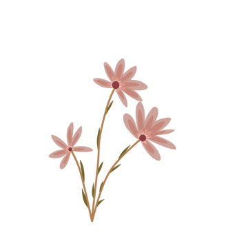

Hoi! Mijn naam is Sanne, ik ben 17 jaar oud en zit in 5 VWO. Voor informatica moet ik mijn eigen website maken, maar voordat we verder gaan moeten jullie mij natuurlijk eerst beter leren kennen! Als klein meisje wilde ik altijd naar paarden en paardrijden. Toen ik 5 jaar oud was begon ik met paardrijden op de shetlanders bij mijn oma. Dat vond ik fantastisch. Toen ik 7 werd mocht ik gaan paardrijden op een manege, nu 10 jaar later rij ik nogsteeds paard op dezelfde manege en heb ik het nogsteeds naar m'n zin.
Mijn vader en broertje waren altijd al fanatiek met voetbal. Toen zij hoorde dat er een meidenteam werd gemaakt op de voetbalclub en ze nog 1 iemand zochten hebben ze mij opgegeven, Dit ging makkelijk, want de organisator van dat team was de trainer van mijn broertje op dat moment. Ik was 12 jaar oud en net begonnen aan de middelbare. Ik kwam thuis op een dinsdagmiddag en er stonden een paar roze voetbalschoenen op tafel (ik had geen idee dat deze voor mij waren, want ik haatte voetbal). Nu bijna 6 jaar later zit ik in het leukste en gezelligste voetbalteam en train ik iedere dinsdag en vrijdag om zaterdag natuurlijk de wedstrijd te winnen. Dit jaar gaan we een leeftijdsklasse omhoog. We worden mo20-1. Dat betekend dat ik tegen 19/20 jarige vrouwen moet gaan voetballen.
Naast sporten heb ik ook een bijbaan om geld te verdienen, zodat ik nieuwe kleding kan kopen. Op maandag en donderdag werk ik achter de kassa bij Jumbo. Ik werk in een super fijn team met allemaal leuke collega's, de klanten zijn aardig en er wordt goed rekening gehouden met mijn school. Ook loop ik sinds een jaar bij een internationaal modellenbureau. Ik had nooit interesse in de modellenwereld, ondanks dat veel vrienden, kennissen en zelfs vreemden tegen mij zeiden dat ik een goed lichaam had om modellenwerk te doen. Op 5 juli 2023 was ik naar het concert van Harry Styles met een vriendin en onze moeders. Toen er iemand van dat modellenbureau naar mij toe kwam en uitlegde dat ik zeer geschikt was voor modellenwerk boeide het mij eigenlijk niet zo, maar toch het kaartje met haar gegeven aangenomen en later contact opgenomen.
